fit ebpmf to sla data with non-negative constraints, new version with different baseline
DongyueXie
2023-07-22
Last updated: 2023-08-07
Checks: 7 0
Knit directory: gsmash/
This reproducible R Markdown analysis was created with workflowr (version 1.6.2). The Checks tab describes the reproducibility checks that were applied when the results were created. The Past versions tab lists the development history.
Great! Since the R Markdown file has been committed to the Git repository, you know the exact version of the code that produced these results.
Great job! The global environment was empty. Objects defined in the global environment can affect the analysis in your R Markdown file in unknown ways. For reproduciblity it’s best to always run the code in an empty environment.
The command set.seed(20220606) was run prior to running
the code in the R Markdown file. Setting a seed ensures that any results
that rely on randomness, e.g. subsampling or permutations, are
reproducible.
Great job! Recording the operating system, R version, and package versions is critical for reproducibility.
Nice! There were no cached chunks for this analysis, so you can be confident that you successfully produced the results during this run.
Great job! Using relative paths to the files within your workflowr project makes it easier to run your code on other machines.
Great! You are using Git for version control. Tracking code development and connecting the code version to the results is critical for reproducibility.
The results in this page were generated with repository version d0c8224. See the Past versions tab to see a history of the changes made to the R Markdown and HTML files.
Note that you need to be careful to ensure that all relevant files for
the analysis have been committed to Git prior to generating the results
(you can use wflow_publish or
wflow_git_commit). workflowr only checks the R Markdown
file, but you know if there are other scripts or data files that it
depends on. Below is the status of the Git repository when the results
were generated:
Ignored files:
Ignored: .Rhistory
Ignored: .Rproj.user/
Ignored: analysis/figure/
Untracked files:
Untracked: analysis/GO_ORA_montoro.Rmd
Untracked: analysis/GO_ORA_pbmc_purified.Rmd
Untracked: analysis/fit_ebpmf_sla_2000.Rmd
Untracked: analysis/poisson_deviance.Rmd
Untracked: analysis/sla_data.Rmd
Untracked: chipexo_rep1_reverse.rds
Untracked: data/Citation.RData
Untracked: data/SLA/
Untracked: data/abstract.txt
Untracked: data/abstract.vocab.txt
Untracked: data/ap.txt
Untracked: data/ap.vocab.txt
Untracked: data/sla_2000.rds
Untracked: data/sla_full.rds
Untracked: data/text.R
Untracked: data/tpm3.rds
Untracked: output/driving_gene_pbmc.rds
Untracked: output/pbmc_gsea.rds
Untracked: output/plots/
Untracked: output/tpm3_fit_fasttopics.rds
Untracked: output/tpm3_fit_stm.rds
Untracked: output/tpm3_fit_stm_slow.rds
Untracked: sla.rds
Unstaged changes:
Modified: analysis/PMF_splitting.Rmd
Modified: analysis/fit_ebpmf_sla.Rmd
Modified: code/poisson_STM/structure_plot.R
Modified: code/poisson_mean/pois_log_normal_mle.R
Note that any generated files, e.g. HTML, png, CSS, etc., are not included in this status report because it is ok for generated content to have uncommitted changes.
These are the previous versions of the repository in which changes were
made to the R Markdown (analysis/fit_ebpmf_sla_nonneg.Rmd)
and HTML (docs/fit_ebpmf_sla_nonneg.html) files. If you’ve
configured a remote Git repository (see ?wflow_git_remote),
click on the hyperlinks in the table below to view the files as they
were in that past version.
| File | Version | Author | Date | Message |
|---|---|---|---|---|
| Rmd | d0c8224 | DongyueXie | 2023-08-07 | wflow_publish(c("analysis/fit_ebpmf_sla_nonneg.Rmd", "analysis/fit_ebpmf_sla_full_nonneg.Rmd", |
Introduction
library(Matrix)
datax = readRDS('data/sla_2000.rds')
dim(datax$data)[1] 3207 1676sum(datax$data==0)/prod(dim(datax$data))[1] 0.9718043datax$data = Matrix(datax$data,sparse = TRUE)Topic model fit
Give the structure plot
library(fastTopics)
fit_tm = fit_topic_model(datax$data,k=6)perform de analysis to find driving genes for each cluster
temp = de_analysis(fit_tm,datax$data)
saveRDS(list(fit_tm=fit_tm,de=temp),file='/project2/mstephens/dongyue/poisson_mf/sla/sla2000_tm_fit.rds')library(fastTopics)
res = readRDS("/project2/mstephens/dongyue/poisson_mf/sla/sla2000_tm_fit.rds")
structure_plot(res$fit_tm,grouping = datax$samples$journal,gap = 40)Running tsne on 623 x 6 matrix.Read the 623 x 6 data matrix successfully!
OpenMP is working. 1 threads.
Using no_dims = 1, perplexity = 100.000000, and theta = 0.100000
Computing input similarities...
Building tree...
Done in 0.29 seconds (sparsity = 0.609354)!
Learning embedding...
Iteration 50: error is 51.027248 (50 iterations in 0.12 seconds)
Iteration 100: error is 51.027248 (50 iterations in 0.12 seconds)
Iteration 150: error is 51.027248 (50 iterations in 0.12 seconds)
Iteration 200: error is 51.027248 (50 iterations in 0.10 seconds)
Iteration 250: error is 51.027248 (50 iterations in 0.10 seconds)
Iteration 300: error is 0.795436 (50 iterations in 0.08 seconds)
Iteration 350: error is 0.780306 (50 iterations in 0.08 seconds)
Iteration 400: error is 0.779315 (50 iterations in 0.08 seconds)
Iteration 450: error is 0.779283 (50 iterations in 0.08 seconds)
Iteration 500: error is 0.779282 (50 iterations in 0.08 seconds)
Iteration 550: error is 0.779282 (50 iterations in 0.11 seconds)
Iteration 600: error is 0.779283 (50 iterations in 0.11 seconds)
Iteration 650: error is 0.779283 (50 iterations in 0.11 seconds)
Iteration 700: error is 0.779283 (50 iterations in 0.11 seconds)
Iteration 750: error is 0.779283 (50 iterations in 0.11 seconds)
Iteration 800: error is 0.779283 (50 iterations in 0.12 seconds)
Iteration 850: error is 0.779283 (50 iterations in 0.12 seconds)
Iteration 900: error is 0.779283 (50 iterations in 0.11 seconds)
Iteration 950: error is 0.779283 (50 iterations in 0.11 seconds)
Iteration 1000: error is 0.779283 (50 iterations in 0.11 seconds)
Fitting performed in 2.08 seconds.Running tsne on 445 x 6 matrix.Read the 445 x 6 data matrix successfully!
OpenMP is working. 1 threads.
Using no_dims = 1, perplexity = 100.000000, and theta = 0.100000
Computing input similarities...
Building tree...
Done in 0.16 seconds (sparsity = 0.829087)!
Learning embedding...
Iteration 50: error is 46.870512 (50 iterations in 0.06 seconds)
Iteration 100: error is 46.870512 (50 iterations in 0.07 seconds)
Iteration 150: error is 46.870512 (50 iterations in 0.07 seconds)
Iteration 200: error is 46.870512 (50 iterations in 0.08 seconds)
Iteration 250: error is 46.870512 (50 iterations in 0.09 seconds)
Iteration 300: error is 0.650196 (50 iterations in 0.06 seconds)
Iteration 350: error is 0.628350 (50 iterations in 0.05 seconds)
Iteration 400: error is 0.624272 (50 iterations in 0.05 seconds)
Iteration 450: error is 0.624278 (50 iterations in 0.05 seconds)
Iteration 500: error is 0.624278 (50 iterations in 0.05 seconds)
Iteration 550: error is 0.624277 (50 iterations in 0.05 seconds)
Iteration 600: error is 0.624277 (50 iterations in 0.06 seconds)
Iteration 650: error is 0.624277 (50 iterations in 0.05 seconds)
Iteration 700: error is 0.624277 (50 iterations in 0.05 seconds)
Iteration 750: error is 0.624277 (50 iterations in 0.05 seconds)
Iteration 800: error is 0.624277 (50 iterations in 0.06 seconds)
Iteration 850: error is 0.624277 (50 iterations in 0.05 seconds)
Iteration 900: error is 0.624277 (50 iterations in 0.05 seconds)
Iteration 950: error is 0.624277 (50 iterations in 0.05 seconds)
Iteration 1000: error is 0.624277 (50 iterations in 0.05 seconds)
Fitting performed in 1.15 seconds.Running tsne on 677 x 6 matrix.Read the 677 x 6 data matrix successfully!
OpenMP is working. 1 threads.
Using no_dims = 1, perplexity = 100.000000, and theta = 0.100000
Computing input similarities...
Building tree...
Done in 0.23 seconds (sparsity = 0.560798)!
Learning embedding...
Iteration 50: error is 52.192517 (50 iterations in 0.10 seconds)
Iteration 100: error is 52.192517 (50 iterations in 0.09 seconds)
Iteration 150: error is 52.192517 (50 iterations in 0.10 seconds)
Iteration 200: error is 52.192517 (50 iterations in 0.10 seconds)
Iteration 250: error is 52.192517 (50 iterations in 0.10 seconds)
Iteration 300: error is 0.809814 (50 iterations in 0.09 seconds)
Iteration 350: error is 0.795717 (50 iterations in 0.09 seconds)
Iteration 400: error is 0.794590 (50 iterations in 0.09 seconds)
Iteration 450: error is 0.794575 (50 iterations in 0.08 seconds)
Iteration 500: error is 0.794576 (50 iterations in 0.09 seconds)
Iteration 550: error is 0.794576 (50 iterations in 0.08 seconds)
Iteration 600: error is 0.794576 (50 iterations in 0.09 seconds)
Iteration 650: error is 0.794576 (50 iterations in 0.09 seconds)
Iteration 700: error is 0.794576 (50 iterations in 0.08 seconds)
Iteration 750: error is 0.794576 (50 iterations in 0.09 seconds)
Iteration 800: error is 0.794576 (50 iterations in 0.09 seconds)
Iteration 850: error is 0.794576 (50 iterations in 0.09 seconds)
Iteration 900: error is 0.794576 (50 iterations in 0.09 seconds)
Iteration 950: error is 0.794576 (50 iterations in 0.09 seconds)
Iteration 1000: error is 0.794576 (50 iterations in 0.09 seconds)
Fitting performed in 1.81 seconds.Running tsne on 255 x 6 matrix.Read the 255 x 6 data matrix successfully!
OpenMP is working. 1 threads.
Using no_dims = 1, perplexity = 83.000000, and theta = 0.100000
Computing input similarities...
Building tree...
Done in 0.06 seconds (sparsity = 0.995309)!
Learning embedding...
Iteration 50: error is 42.527514 (50 iterations in 0.03 seconds)
Iteration 100: error is 42.512043 (50 iterations in 0.03 seconds)
Iteration 150: error is 42.519335 (50 iterations in 0.03 seconds)
Iteration 200: error is 42.516633 (50 iterations in 0.03 seconds)
Iteration 250: error is 42.517355 (50 iterations in 0.03 seconds)
Iteration 300: error is 0.480124 (50 iterations in 0.02 seconds)
Iteration 350: error is 0.479407 (50 iterations in 0.02 seconds)
Iteration 400: error is 0.479409 (50 iterations in 0.02 seconds)
Iteration 450: error is 0.479408 (50 iterations in 0.02 seconds)
Iteration 500: error is 0.479408 (50 iterations in 0.03 seconds)
Iteration 550: error is 0.479408 (50 iterations in 0.02 seconds)
Iteration 600: error is 0.479408 (50 iterations in 0.02 seconds)
Iteration 650: error is 0.479408 (50 iterations in 0.03 seconds)
Iteration 700: error is 0.479408 (50 iterations in 0.02 seconds)
Iteration 750: error is 0.479408 (50 iterations in 0.02 seconds)
Iteration 800: error is 0.479408 (50 iterations in 0.02 seconds)
Iteration 850: error is 0.479408 (50 iterations in 0.02 seconds)
Iteration 900: error is 0.479408 (50 iterations in 0.03 seconds)
Iteration 950: error is 0.479408 (50 iterations in 0.02 seconds)
Iteration 1000: error is 0.479408 (50 iterations in 0.02 seconds)
Fitting performed in 0.48 seconds.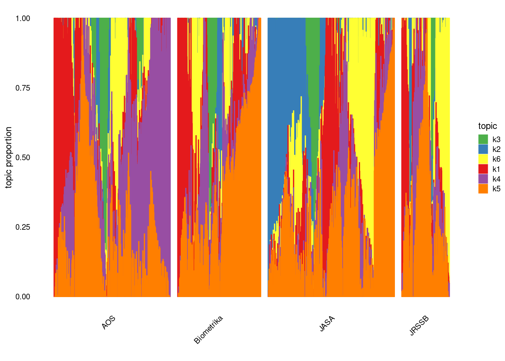
structure_plot(res$fit_tm,grouping = datax$samples$year,gap = 40)Running tsne on 184 x 6 matrix.Read the 184 x 6 data matrix successfully!
OpenMP is working. 1 threads.
Using no_dims = 1, perplexity = 60.000000, and theta = 0.100000
Computing input similarities...
Building tree...
Done in 0.03 seconds (sparsity = 0.994211)!
Learning embedding...
Iteration 50: error is 42.900600 (50 iterations in 0.01 seconds)
Iteration 100: error is 43.104470 (50 iterations in 0.01 seconds)
Iteration 150: error is 43.605174 (50 iterations in 0.01 seconds)
Iteration 200: error is 44.219736 (50 iterations in 0.01 seconds)
Iteration 250: error is 43.265484 (50 iterations in 0.01 seconds)
Iteration 300: error is 0.530834 (50 iterations in 0.02 seconds)
Iteration 350: error is 0.524756 (50 iterations in 0.02 seconds)
Iteration 400: error is 0.524760 (50 iterations in 0.01 seconds)
Iteration 450: error is 0.524759 (50 iterations in 0.02 seconds)
Iteration 500: error is 0.524760 (50 iterations in 0.01 seconds)
Iteration 550: error is 0.524759 (50 iterations in 0.02 seconds)
Iteration 600: error is 0.524759 (50 iterations in 0.01 seconds)
Iteration 650: error is 0.524759 (50 iterations in 0.01 seconds)
Iteration 700: error is 0.524759 (50 iterations in 0.02 seconds)
Iteration 750: error is 0.524760 (50 iterations in 0.01 seconds)
Iteration 800: error is 0.524760 (50 iterations in 0.02 seconds)
Iteration 850: error is 0.524759 (50 iterations in 0.01 seconds)
Iteration 900: error is 0.524760 (50 iterations in 0.02 seconds)
Iteration 950: error is 0.524759 (50 iterations in 0.01 seconds)
Iteration 1000: error is 0.524759 (50 iterations in 0.01 seconds)
Fitting performed in 0.27 seconds.Running tsne on 198 x 6 matrix.Read the 198 x 6 data matrix successfully!
OpenMP is working. 1 threads.
Using no_dims = 1, perplexity = 64.000000, and theta = 0.100000
Computing input similarities...
Building tree...
Done in 0.04 seconds (sparsity = 0.993980)!
Learning embedding...
Iteration 50: error is 43.612949 (50 iterations in 0.02 seconds)
Iteration 100: error is 43.752500 (50 iterations in 0.02 seconds)
Iteration 150: error is 42.718052 (50 iterations in 0.02 seconds)
Iteration 200: error is 42.757717 (50 iterations in 0.02 seconds)
Iteration 250: error is 42.742890 (50 iterations in 0.02 seconds)
Iteration 300: error is 0.556504 (50 iterations in 0.01 seconds)
Iteration 350: error is 0.554136 (50 iterations in 0.01 seconds)
Iteration 400: error is 0.554022 (50 iterations in 0.01 seconds)
Iteration 450: error is 0.554022 (50 iterations in 0.02 seconds)
Iteration 500: error is 0.554026 (50 iterations in 0.02 seconds)
Iteration 550: error is 0.554026 (50 iterations in 0.01 seconds)
Iteration 600: error is 0.554022 (50 iterations in 0.01 seconds)
Iteration 650: error is 0.554023 (50 iterations in 0.01 seconds)
Iteration 700: error is 0.554023 (50 iterations in 0.02 seconds)
Iteration 750: error is 0.554022 (50 iterations in 0.02 seconds)
Iteration 800: error is 0.554022 (50 iterations in 0.01 seconds)
Iteration 850: error is 0.554022 (50 iterations in 0.01 seconds)
Iteration 900: error is 0.554023 (50 iterations in 0.02 seconds)
Iteration 950: error is 0.554026 (50 iterations in 0.02 seconds)
Iteration 1000: error is 0.554023 (50 iterations in 0.01 seconds)
Fitting performed in 0.31 seconds.Running tsne on 201 x 6 matrix.Read the 201 x 6 data matrix successfully!
OpenMP is working. 1 threads.
Using no_dims = 1, perplexity = 65.000000, and theta = 0.100000
Computing input similarities...
Building tree...
Done in 0.03 seconds (sparsity = 0.994134)!
Learning embedding...
Iteration 50: error is 42.784304 (50 iterations in 0.02 seconds)
Iteration 100: error is 42.951167 (50 iterations in 0.02 seconds)
Iteration 150: error is 42.699893 (50 iterations in 0.02 seconds)
Iteration 200: error is 42.887317 (50 iterations in 0.02 seconds)
Iteration 250: error is 43.286910 (50 iterations in 0.02 seconds)
Iteration 300: error is 0.587597 (50 iterations in 0.02 seconds)
Iteration 350: error is 0.584989 (50 iterations in 0.02 seconds)
Iteration 400: error is 0.584900 (50 iterations in 0.01 seconds)
Iteration 450: error is 0.584703 (50 iterations in 0.02 seconds)
Iteration 500: error is 0.584704 (50 iterations in 0.02 seconds)
Iteration 550: error is 0.584704 (50 iterations in 0.02 seconds)
Iteration 600: error is 0.584705 (50 iterations in 0.02 seconds)
Iteration 650: error is 0.584705 (50 iterations in 0.02 seconds)
Iteration 700: error is 0.584704 (50 iterations in 0.02 seconds)
Iteration 750: error is 0.584705 (50 iterations in 0.02 seconds)
Iteration 800: error is 0.584705 (50 iterations in 0.02 seconds)
Iteration 850: error is 0.584705 (50 iterations in 0.02 seconds)
Iteration 900: error is 0.584705 (50 iterations in 0.02 seconds)
Iteration 950: error is 0.584705 (50 iterations in 0.02 seconds)
Iteration 1000: error is 0.584705 (50 iterations in 0.02 seconds)
Fitting performed in 0.39 seconds.Running tsne on 237 x 6 matrix.Read the 237 x 6 data matrix successfully!
OpenMP is working. 1 threads.
Using no_dims = 1, perplexity = 77.000000, and theta = 0.100000
Computing input similarities...
Building tree...
Done in 0.05 seconds (sparsity = 0.995033)!
Learning embedding...
Iteration 50: error is 42.862009 (50 iterations in 0.03 seconds)
Iteration 100: error is 42.587738 (50 iterations in 0.03 seconds)
Iteration 150: error is 42.561815 (50 iterations in 0.03 seconds)
Iteration 200: error is 42.600195 (50 iterations in 0.03 seconds)
Iteration 250: error is 42.567206 (50 iterations in 0.03 seconds)
Iteration 300: error is 0.521753 (50 iterations in 0.02 seconds)
Iteration 350: error is 0.520526 (50 iterations in 0.02 seconds)
Iteration 400: error is 0.520525 (50 iterations in 0.02 seconds)
Iteration 450: error is 0.520529 (50 iterations in 0.02 seconds)
Iteration 500: error is 0.520525 (50 iterations in 0.02 seconds)
Iteration 550: error is 0.520526 (50 iterations in 0.04 seconds)
Iteration 600: error is 0.520525 (50 iterations in 0.04 seconds)
Iteration 650: error is 0.520525 (50 iterations in 0.04 seconds)
Iteration 700: error is 0.520527 (50 iterations in 0.03 seconds)
Iteration 750: error is 0.520524 (50 iterations in 0.03 seconds)
Iteration 800: error is 0.520524 (50 iterations in 0.03 seconds)
Iteration 850: error is 0.520525 (50 iterations in 0.02 seconds)
Iteration 900: error is 0.520528 (50 iterations in 0.03 seconds)
Iteration 950: error is 0.520524 (50 iterations in 0.03 seconds)
Iteration 1000: error is 0.520525 (50 iterations in 0.03 seconds)
Fitting performed in 0.57 seconds.Running tsne on 193 x 6 matrix.Read the 193 x 6 data matrix successfully!
OpenMP is working. 1 threads.
Using no_dims = 1, perplexity = 63.000000, and theta = 0.100000
Computing input similarities...
Building tree...
Done in 0.04 seconds (sparsity = 0.994389)!
Learning embedding...
Iteration 50: error is 43.429374 (50 iterations in 0.03 seconds)
Iteration 100: error is 42.719702 (50 iterations in 0.03 seconds)
Iteration 150: error is 42.848281 (50 iterations in 0.03 seconds)
Iteration 200: error is 42.646843 (50 iterations in 0.02 seconds)
Iteration 250: error is 42.582825 (50 iterations in 0.02 seconds)
Iteration 300: error is 0.549592 (50 iterations in 0.02 seconds)
Iteration 350: error is 0.545721 (50 iterations in 0.02 seconds)
Iteration 400: error is 0.545723 (50 iterations in 0.02 seconds)
Iteration 450: error is 0.545721 (50 iterations in 0.02 seconds)
Iteration 500: error is 0.545721 (50 iterations in 0.02 seconds)
Iteration 550: error is 0.545721 (50 iterations in 0.02 seconds)
Iteration 600: error is 0.545721 (50 iterations in 0.02 seconds)
Iteration 650: error is 0.545721 (50 iterations in 0.02 seconds)
Iteration 700: error is 0.545721 (50 iterations in 0.01 seconds)
Iteration 750: error is 0.545721 (50 iterations in 0.01 seconds)
Iteration 800: error is 0.545721 (50 iterations in 0.02 seconds)
Iteration 850: error is 0.545721 (50 iterations in 0.02 seconds)
Iteration 900: error is 0.545721 (50 iterations in 0.01 seconds)
Iteration 950: error is 0.545721 (50 iterations in 0.01 seconds)
Iteration 1000: error is 0.545721 (50 iterations in 0.02 seconds)
Fitting performed in 0.39 seconds.Running tsne on 214 x 6 matrix.Read the 214 x 6 data matrix successfully!
OpenMP is working. 1 threads.
Using no_dims = 1, perplexity = 70.000000, and theta = 0.100000
Computing input similarities...
Building tree...
Done in 0.04 seconds (sparsity = 0.995021)!
Learning embedding...
Iteration 50: error is 42.795898 (50 iterations in 0.03 seconds)
Iteration 100: error is 42.766498 (50 iterations in 0.02 seconds)
Iteration 150: error is 42.639801 (50 iterations in 0.02 seconds)
Iteration 200: error is 42.678998 (50 iterations in 0.02 seconds)
Iteration 250: error is 42.632424 (50 iterations in 0.02 seconds)
Iteration 300: error is 0.651198 (50 iterations in 0.01 seconds)
Iteration 350: error is 0.650040 (50 iterations in 0.02 seconds)
Iteration 400: error is 0.650035 (50 iterations in 0.01 seconds)
Iteration 450: error is 0.650035 (50 iterations in 0.01 seconds)
Iteration 500: error is 0.650034 (50 iterations in 0.01 seconds)
Iteration 550: error is 0.650035 (50 iterations in 0.01 seconds)
Iteration 600: error is 0.650034 (50 iterations in 0.01 seconds)
Iteration 650: error is 0.650034 (50 iterations in 0.01 seconds)
Iteration 700: error is 0.650035 (50 iterations in 0.01 seconds)
Iteration 750: error is 0.650034 (50 iterations in 0.02 seconds)
Iteration 800: error is 0.650034 (50 iterations in 0.02 seconds)
Iteration 850: error is 0.650035 (50 iterations in 0.02 seconds)
Iteration 900: error is 0.650034 (50 iterations in 0.02 seconds)
Iteration 950: error is 0.650034 (50 iterations in 0.02 seconds)
Iteration 1000: error is 0.650034 (50 iterations in 0.01 seconds)
Fitting performed in 0.32 seconds.Running tsne on 263 x 6 matrix.Read the 263 x 6 data matrix successfully!
OpenMP is working. 1 threads.
Using no_dims = 1, perplexity = 86.000000, and theta = 0.100000
Computing input similarities...
Building tree...
Done in 0.07 seconds (sparsity = 0.995735)!
Learning embedding...
Iteration 50: error is 42.593942 (50 iterations in 0.03 seconds)
Iteration 100: error is 42.586819 (50 iterations in 0.03 seconds)
Iteration 150: error is 42.590071 (50 iterations in 0.04 seconds)
Iteration 200: error is 42.596708 (50 iterations in 0.03 seconds)
Iteration 250: error is 42.592414 (50 iterations in 0.03 seconds)
Iteration 300: error is 0.564634 (50 iterations in 0.03 seconds)
Iteration 350: error is 0.564212 (50 iterations in 0.03 seconds)
Iteration 400: error is 0.564216 (50 iterations in 0.02 seconds)
Iteration 450: error is 0.564216 (50 iterations in 0.02 seconds)
Iteration 500: error is 0.564216 (50 iterations in 0.02 seconds)
Iteration 550: error is 0.564216 (50 iterations in 0.02 seconds)
Iteration 600: error is 0.564216 (50 iterations in 0.02 seconds)
Iteration 650: error is 0.564216 (50 iterations in 0.03 seconds)
Iteration 700: error is 0.564216 (50 iterations in 0.03 seconds)
Iteration 750: error is 0.564216 (50 iterations in 0.02 seconds)
Iteration 800: error is 0.564216 (50 iterations in 0.02 seconds)
Iteration 850: error is 0.564216 (50 iterations in 0.02 seconds)
Iteration 900: error is 0.564216 (50 iterations in 0.02 seconds)
Iteration 950: error is 0.564216 (50 iterations in 0.02 seconds)
Iteration 1000: error is 0.564216 (50 iterations in 0.02 seconds)
Fitting performed in 0.50 seconds.Running tsne on 216 x 6 matrix.Read the 216 x 6 data matrix successfully!
OpenMP is working. 1 threads.
Using no_dims = 1, perplexity = 70.000000, and theta = 0.100000
Computing input similarities...
Building tree...
Done in 0.04 seconds (sparsity = 0.994556)!
Learning embedding...
Iteration 50: error is 43.367824 (50 iterations in 0.03 seconds)
Iteration 100: error is 42.798424 (50 iterations in 0.02 seconds)
Iteration 150: error is 42.609370 (50 iterations in 0.03 seconds)
Iteration 200: error is 42.669347 (50 iterations in 0.02 seconds)
Iteration 250: error is 42.636522 (50 iterations in 0.03 seconds)
Iteration 300: error is 0.607440 (50 iterations in 0.02 seconds)
Iteration 350: error is 0.604656 (50 iterations in 0.02 seconds)
Iteration 400: error is 0.604632 (50 iterations in 0.02 seconds)
Iteration 450: error is 0.604632 (50 iterations in 0.02 seconds)
Iteration 500: error is 0.604632 (50 iterations in 0.02 seconds)
Iteration 550: error is 0.604632 (50 iterations in 0.02 seconds)
Iteration 600: error is 0.604632 (50 iterations in 0.02 seconds)
Iteration 650: error is 0.604632 (50 iterations in 0.02 seconds)
Iteration 700: error is 0.604632 (50 iterations in 0.02 seconds)
Iteration 750: error is 0.604632 (50 iterations in 0.02 seconds)
Iteration 800: error is 0.604632 (50 iterations in 0.02 seconds)
Iteration 850: error is 0.604632 (50 iterations in 0.02 seconds)
Iteration 900: error is 0.604632 (50 iterations in 0.02 seconds)
Iteration 950: error is 0.604632 (50 iterations in 0.02 seconds)
Iteration 1000: error is 0.604632 (50 iterations in 0.02 seconds)
Fitting performed in 0.43 seconds.Running tsne on 213 x 6 matrix.Read the 213 x 6 data matrix successfully!
OpenMP is working. 1 threads.
Using no_dims = 1, perplexity = 69.000000, and theta = 0.100000
Computing input similarities...
Building tree...
Done in 0.04 seconds (sparsity = 0.994512)!
Learning embedding...
Iteration 50: error is 43.273540 (50 iterations in 0.02 seconds)
Iteration 100: error is 42.751504 (50 iterations in 0.02 seconds)
Iteration 150: error is 42.783106 (50 iterations in 0.02 seconds)
Iteration 200: error is 42.783024 (50 iterations in 0.02 seconds)
Iteration 250: error is 42.785481 (50 iterations in 0.02 seconds)
Iteration 300: error is 0.586326 (50 iterations in 0.02 seconds)
Iteration 350: error is 0.584875 (50 iterations in 0.01 seconds)
Iteration 400: error is 0.584878 (50 iterations in 0.01 seconds)
Iteration 450: error is 0.584878 (50 iterations in 0.01 seconds)
Iteration 500: error is 0.584878 (50 iterations in 0.01 seconds)
Iteration 550: error is 0.584878 (50 iterations in 0.01 seconds)
Iteration 600: error is 0.584878 (50 iterations in 0.01 seconds)
Iteration 650: error is 0.584878 (50 iterations in 0.01 seconds)
Iteration 700: error is 0.584878 (50 iterations in 0.01 seconds)
Iteration 750: error is 0.584878 (50 iterations in 0.01 seconds)
Iteration 800: error is 0.584878 (50 iterations in 0.01 seconds)
Iteration 850: error is 0.584878 (50 iterations in 0.01 seconds)
Iteration 900: error is 0.584878 (50 iterations in 0.01 seconds)
Iteration 950: error is 0.584878 (50 iterations in 0.01 seconds)
Iteration 1000: error is 0.584878 (50 iterations in 0.02 seconds)
Fitting performed in 0.27 seconds.Running tsne on 81 x 6 matrix.Read the 81 x 6 data matrix successfully!
OpenMP is working. 1 threads.
Using no_dims = 1, perplexity = 25.000000, and theta = 0.100000
Computing input similarities...
Building tree...
Done in 0.00 seconds (sparsity = 0.980338)!
Learning embedding...
Iteration 50: error is 51.494552 (50 iterations in 0.01 seconds)
Iteration 100: error is 53.975833 (50 iterations in 0.01 seconds)
Iteration 150: error is 52.708010 (50 iterations in 0.00 seconds)
Iteration 200: error is 54.480335 (50 iterations in 0.01 seconds)
Iteration 250: error is 51.808301 (50 iterations in 0.00 seconds)
Iteration 300: error is 2.335852 (50 iterations in 0.01 seconds)
Iteration 350: error is 0.777239 (50 iterations in 0.00 seconds)
Iteration 400: error is 0.707701 (50 iterations in 0.01 seconds)
Iteration 450: error is 0.705153 (50 iterations in 0.01 seconds)
Iteration 500: error is 0.705148 (50 iterations in 0.00 seconds)
Iteration 550: error is 0.705158 (50 iterations in 0.01 seconds)
Iteration 600: error is 0.705158 (50 iterations in 0.00 seconds)
Iteration 650: error is 0.705158 (50 iterations in 0.01 seconds)
Iteration 700: error is 0.705158 (50 iterations in 0.00 seconds)
Iteration 750: error is 0.705158 (50 iterations in 0.01 seconds)
Iteration 800: error is 0.705157 (50 iterations in 0.00 seconds)
Iteration 850: error is 0.705158 (50 iterations in 0.01 seconds)
Iteration 900: error is 0.705158 (50 iterations in 0.00 seconds)
Iteration 950: error is 0.705158 (50 iterations in 0.01 seconds)
Iteration 1000: error is 0.705148 (50 iterations in 0.00 seconds)
Fitting performed in 0.11 seconds.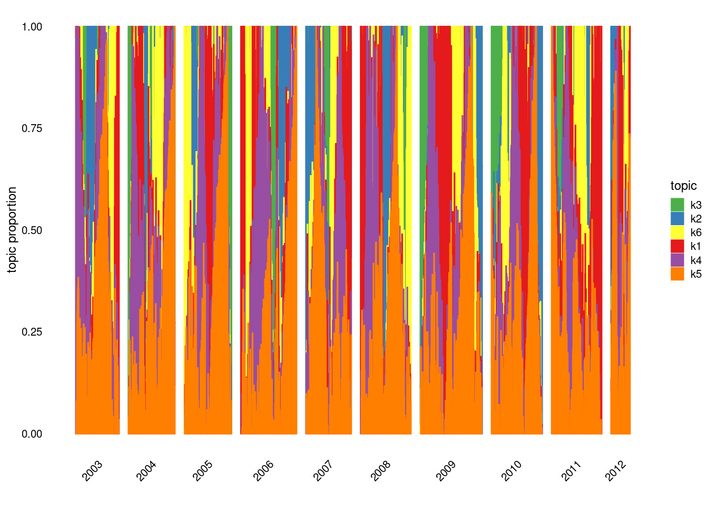
for(k in 1:6){
dat <- data.frame(postmean = res$de$postmean[,k],
z = res$de$z[,k],
lfsr = res$de$lfsr[,k])
rownames(dat) <- colnames(datax$data)
dat <- subset(dat,lfsr < 0.01)
dat <- dat[order(dat$postmean,decreasing = TRUE),]
print(head(dat,n=10))
print(tail(dat,n=10))
#print(colnames(datax$data)[order(temp$lfsr[,k],decreasing = F)[1:10]])
} postmean z lfsr
discrimin 3.439327 5.315792 3.572371e-06
reduct 3.375369 5.489605 1.542760e-06
dimension 3.070422 5.892474 2.277410e-07
highdimension 2.919651 5.703543 7.454959e-07
classifi 2.898948 6.345739 1.796964e-08
design 2.476216 13.195527 4.432048e-37
orthogon 2.446966 5.092202 2.185052e-05
dimens 2.350688 5.000186 3.423303e-05
minimum 2.195728 5.447632 3.859730e-06
optim 1.998933 9.029148 3.987214e-17
postmean z lfsr
high 0.9867480 3.603608 4.606809e-03
variabl 0.9645800 6.056939 1.249247e-07
model 0.8438619 4.356328 6.647502e-04
combin 0.8124349 3.832568 3.185274e-03
method 0.6017947 7.245728 1.225201e-10
algorithm 0.5941922 4.932966 1.077168e-04
number 0.5029455 4.231585 1.694667e-03
accuraci -0.3062225 -4.041613 3.556599e-03
consist -0.6592416 -3.861515 3.526193e-03
space -1.1279240 -4.431617 3.541235e-04
postmean z lfsr
assign 3.787664 4.272563 2.798229e-04
sensit 3.443767 3.743391 1.994975e-03
clinic 3.069717 5.627090 9.966501e-07
prevent 2.814471 3.476601 4.877877e-03
event 2.715320 6.015430 1.478530e-07
microarray 2.703924 3.344203 6.545493e-03
genet 2.662526 3.418477 5.701651e-03
popul 2.535894 5.885040 3.414160e-07
individu 2.356535 5.704551 9.777792e-07
select 2.290023 8.798051 3.095720e-16
postmean z lfsr
model -0.8438619 -4.356328 6.647502e-04
uncertainti -1.0204325 -3.528910 5.290660e-03
trend -1.0344636 -4.394458 4.450910e-04
rate -1.0356822 -29.149919 0.000000e+00
ratio -1.0952958 -6.153113 5.840683e-08
imput -1.1800908 -3.592230 4.288611e-03
endpoint -1.2045852 -41.660406 1.110223e-16
hierarch -1.5619640 -9.406495 0.000000e+00
control -1.9000924 -12.481345 0.000000e+00
design -2.4731306 -13.561783 1.110223e-16
postmean z lfsr
power 3.947916 6.869030 1.880604e-10
interv 3.575392 8.345619 4.602503e-15
formula 3.222015 6.353187 1.262964e-08
goodnessoffit 3.053924 4.548916 1.735564e-04
detect 2.413777 7.654507 3.115814e-12
statist 2.326509 15.564642 8.777774e-52
critic 2.251644 4.361037 4.786440e-04
procedur 2.245080 19.811680 2.626154e-84
nomin 2.236514 3.277980 7.898995e-03
altern 2.145443 9.679711 1.007919e-19
postmean z lfsr
sequenti 1.5208507 4.645726 1.382423e-04
valid 1.4280797 6.242530 3.183598e-08
accur 1.2861417 4.775961 7.737080e-05
region 1.0295796 4.398035 4.415526e-04
multipl 0.9478648 6.571025 5.344216e-09
base 0.6641052 4.019058 2.398336e-03
number -0.4144997 -33.665019 0.000000e+00
seri -1.0602498 -3.316945 7.887001e-03
nuisanc -1.0731474 -12.690783 0.000000e+00
infer -1.4181330 -9.280200 0.000000e+00
postmean z lfsr
beta 2.838778 3.921552 1.649754e-03
nois 2.822747 3.728725 2.745070e-03
converg 2.722211 10.643902 4.986853e-24
kernel 2.590023 6.917476 5.518706e-10
curv 2.516266 7.122112 1.406579e-10
bound 2.406558 8.228475 3.559607e-14
surrog 2.372618 3.937090 1.784564e-03
definit 2.054076 3.568108 4.447825e-03
gaussian 1.853932 7.840960 7.109725e-13
smooth 1.541509 7.431149 1.210114e-11
postmean z lfsr
space 1.1134272 4.062877 0.0012845016
defin 0.9298225 3.816431 0.0029458138
local 0.9179223 4.556173 0.0002785222
random -0.4840578 -4.346044 0.0012497629
autoregress -0.9088690 -69.414130 0.0000000000
nonparametr -1.0568681 -11.304077 0.0000000000
estim -1.0785918 -23.773069 0.0000000000
process -1.0873832 -11.646691 0.0000000000
coeffici -1.1952066 -3.874571 0.0021220214
time -1.3030334 -11.626613 0.0000000000
postmean z lfsr
equat 3.206874 7.307185 2.180004e-11
likelihood 2.734614 7.721429 1.594672e-12
parametr 2.407075 10.673742 4.337176e-24
logist 2.175298 3.819440 2.466543e-03
misspecifi 2.156455 3.849153 2.287086e-03
covari 1.976903 11.603603 1.524744e-28
maximum 1.831157 7.078379 1.825080e-10
varianc 1.543207 6.779166 1.127296e-09
partial 1.479427 5.187091 1.122636e-05
robust 1.454124 3.665540 3.464892e-03
postmean z lfsr
paramet 1.0516013 13.812049 7.277193e-41
simul 1.0352282 9.243753 4.020045e-18
propos 0.8403483 8.370104 1.194633e-14
normal 0.7954162 5.950559 3.318383e-07
illustr 0.7359618 4.193291 1.337809e-03
asymptot 0.3360910 4.265125 1.992723e-03
model -0.3863409 -7.848799 2.355893e-12
status -1.0074987 -130.248581 1.110223e-16
function -1.2673707 -14.422709 0.000000e+00
matrix -1.4449920 -4.582492 1.774364e-04
postmean z lfsr
carlo 4.154490 3.960234 6.137768e-04
dynam 2.805597 4.410797 3.435993e-04
mixtur 2.649898 10.034441 2.694473e-21
graph 2.610780 3.521614 4.655960e-03
site 2.550990 3.770069 2.669571e-03
asset 2.383560 3.773764 2.720677e-03
tree 2.249990 4.103161 1.118625e-03
surfac 2.235721 4.567556 2.210561e-04
claim 1.930835 3.682054 3.428533e-03
poisson 1.847531 5.018930 2.943170e-05
postmean z lfsr
model 0.3863409 7.848799 2.355930e-12
observ -0.3512608 -5.631000 5.992646e-06
data -0.3759894 -4.224026 2.084942e-03
measur -0.4965566 -13.892288 1.110223e-16
algorithm -0.5941922 -4.932966 1.077168e-04
point -0.6158494 -4.719937 2.570242e-04
year -0.7913695 -5.437336 5.739142e-06
region -0.9064420 -14.642625 0.000000e+00
paper -0.9154873 -6.942717 4.829522e-10
gaussian -1.7875811 -12.723713 0.000000e+00EBNMF fit
library(flashier)Loading required package: magrittrLoading required package: ebnmlibrary(ebpmf)
Y_tilde = log_for_ebmf(datax$data)
fit_flash = flash(Y_tilde,ebnm_fn = ebnm::ebnm_point_exponential,var_type = 2,backfit = T,greedy_Kmax = 10)Adding factor 1 to flash object...
Adding factor 2 to flash object...
Adding factor 3 to flash object...
Adding factor 4 to flash object...
Adding factor 5 to flash object...
Adding factor 6 to flash object...
Adding factor 7 to flash object...
Adding factor 8 to flash object...
Adding factor 9 to flash object...
Adding factor 10 to flash object...
Wrapping up...
Done.
Backfitting 10 factors (tolerance: 8.01e-02)...
Difference between iterations is within 1.0e+04...
--Estimate of factor 6 is numerically zero!
--Estimate of factor 8 is numerically zero!
--Estimate of factor 10 is numerically zero!
Difference between iterations is within 1.0e+03...
Wrapping up...
Done.
Nullchecking 10 factors...
Done.for(k in 1:fit_flash$n_factors){
print(colnames(datax$data)[order(fit_flash$F_pm[,k],decreasing = T)[1:10]])
} [1] "estim" "model" "method" "data" "propos" "studi"
[7] "distribut" "function" "simul" "sampl"
[1] "fals" "discoveri" "rate" "control" "procedur" "multipl"
[7] "number" "hypothes" "reject" "fdr"
[1] "hazard" "model" "proport" "estim" "time" "surviv"
[7] "studi" "covari" "function" "data"
[1] "brownian" "motion" "process" "fraction" "converg" "limit"
[7] "drift" "prove" "mle" "rate"
[1] "semiparametr" "estim" "model" "effici" "propos"
[6] "asymptot" "nonparametr" "studi" "regress" "paramet"
[1] "test" "null" "hypothesi" "distribut" "statist" "altern"
[7] "asymptot" "hypothes" "power" "ratio"
[1] "memori" "estim" "long" "paramet" "process"
[6] "stationari" "gaussian" "seri" "local" "consist"
[1] "besov" "adapt" "wavelet" "ball" "threshold" "estim"
[7] "rang" "risk" "rate" "construct"
[1] "penalti" "select" "penal" "estim" "regress" "oracl"
[7] "model" "function" "smooth" "propos"
[1] "bar" "vertic" "densiti" "random" "cap" "lambda"
[7] "condit" "alpha" "theta" "independ"# input: fit, topics, grouping
# poisson2multinom
#
library(fastTopics)
library(ggplot2)
library(gridExtra)
structure_plot_general = function(Lhat,Fhat,grouping,title=NULL,
loadings_order = 'embed',
print_plot=TRUE,
seed=12345,
n_samples = NULL,
gap=40,
std_L_method = 'sum_to_1',
show_legend=TRUE,
K = NULL,
colors = c('#a6cee3',
'#1f78b4',
'#b2df8a',
'#33a02c',
'#fb9a99',
'#e31a1c',
'#fdbf6f',
'#ff7f00',
'#cab2d6',
'#6a3d9a',
'#ffff99',
'#b15928')){
set.seed(seed)
#s <- apply(Lhat,2,max)
#Lhat <- t(t(Lhat) / s)
if(is.null(n_samples)&all(loadings_order == "embed")){
n_samples = 2000
}
if(std_L_method=='sum_to_1'){
Lhat = Lhat/rowSums(Lhat)
}
if(std_L_method=='row_max_1'){
Lhat = Lhat/c(apply(Lhat,1,max))
}
if(std_L_method=='col_max_1'){
Lhat = apply(Lhat,2,function(z){z/max(z)})
}
if(std_L_method=='col_norm_1'){
Lhat = apply(Lhat,2,function(z){z/norm(z,'2')})
}
if(!is.null(K)){
Lhat = Lhat[,1:K]
Fhat = Fhat[,1:K]
}
Fhat = matrix(1,nrow=3,ncol=ncol(Lhat))
if(is.null(colnames(Lhat))){
colnames(Lhat) <- paste0("k",1:ncol(Lhat))
}
fit_list <- list(L = Lhat,F = Fhat)
class(fit_list) <- c("multinom_topic_model_fit", "list")
p <- structure_plot(fit_list,grouping = grouping,
loadings_order = loadings_order,
n = n_samples,gap = gap,colors=colors,verbose=F) +
labs(y = "loading",color = "dim",fill = "dim") + ggtitle(title)
if(!show_legend){
p <- p + theme(legend.position="none")
}
if(print_plot){
print(p)
}
return(p)
}p1=structure_plot_general(fit_flash$L_pm,fit_flash$F_pm,grouping = datax$samples$journal,std_L_method = 'sum_to_1')Running tsne on 600 x 10 matrix.Running tsne on 469 x 10 matrix.Running tsne on 684 x 10 matrix.Running tsne on 247 x 10 matrix.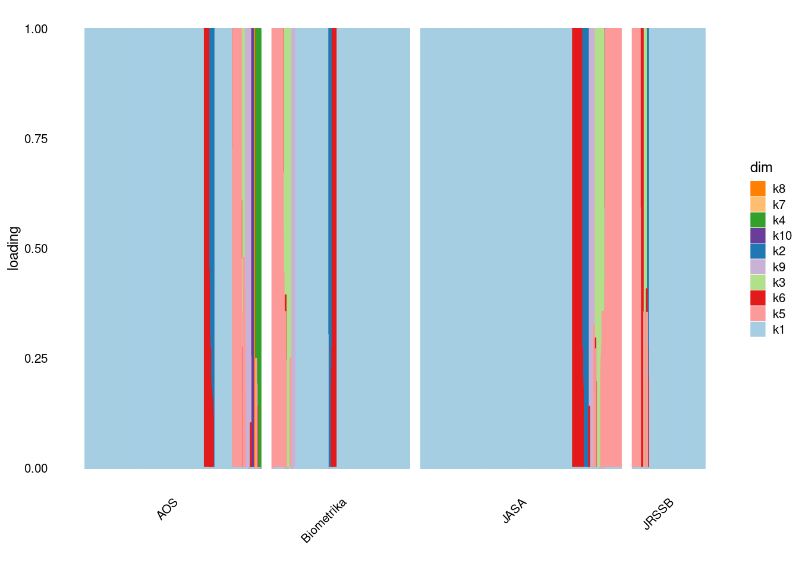
p2=structure_plot_general(fit_flash$L_pm,fit_flash$F_pm,grouping = datax$samples$journal,std_L_method = 'row_max_1')Running tsne on 600 x 10 matrix.Running tsne on 469 x 10 matrix.Running tsne on 684 x 10 matrix.Running tsne on 247 x 10 matrix.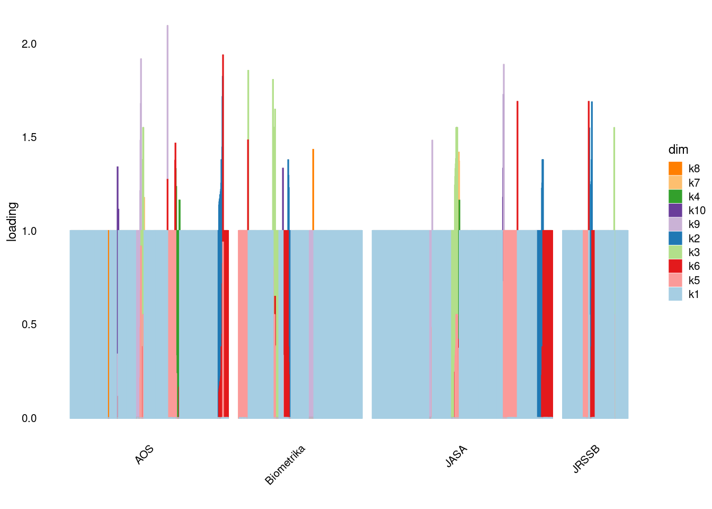
p3=structure_plot_general(fit_flash$L_pm,fit_flash$F_pm,grouping = datax$samples$journal,std_L_method = 'col_norm_1')Running tsne on 600 x 10 matrix.Running tsne on 469 x 10 matrix.Running tsne on 684 x 10 matrix.Running tsne on 247 x 10 matrix.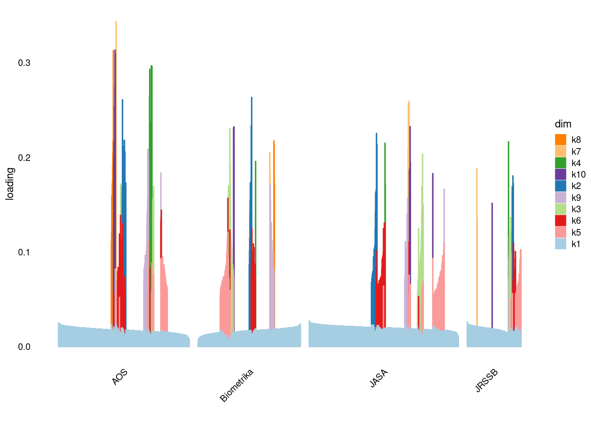
p4=structure_plot_general(fit_flash$L_pm,fit_flash$F_pm,grouping = datax$samples$journal,std_L_method = 'col_max_1')Running tsne on 600 x 10 matrix.Running tsne on 469 x 10 matrix.Running tsne on 684 x 10 matrix.Running tsne on 247 x 10 matrix.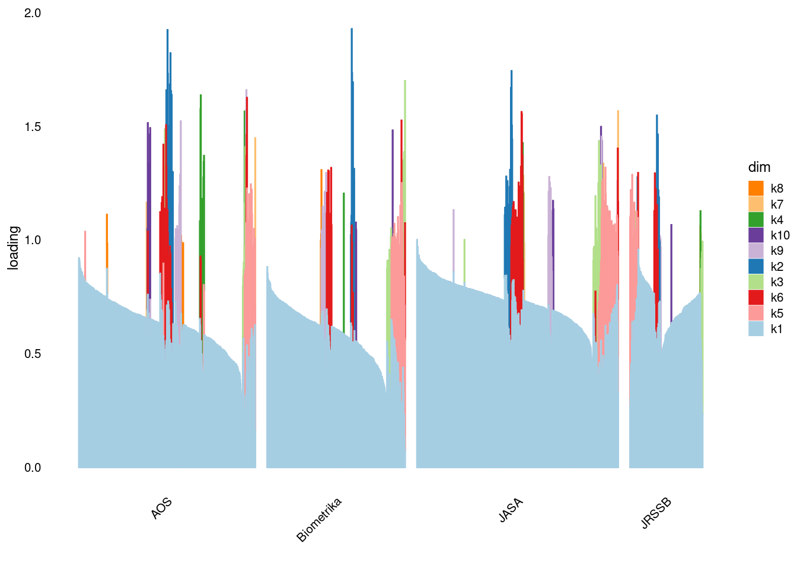
EBPMF fit
Init 1
library(ebpmf)
# fit_ebpmf1 = ebpmf_log(datax$data,
# flash_control=list(backfit_extrapolate=T,backfit_warmstart=T,
# ebnm.fn = c(ebnm::ebnm_point_exponential, ebnm::ebnm_point_exponential),
# loadings_sign = 1,factors_sign=1,Kmax=10),
# init_control = list(n_cores=5,flash_est_sigma2=F,log_init_for_non0y=T),
# general_control = list(maxiter=500,save_init_val=T,save_latent_M=T),
# sigma2_control = list(return_sigma2_trace=T))
fit_ebpmf1 = readRDS('/project2/mstephens/dongyue/poisson_mf/sla/sla2000_ebnmf_fit_init1.rds')plot(fit_ebpmf1$elbo_trace)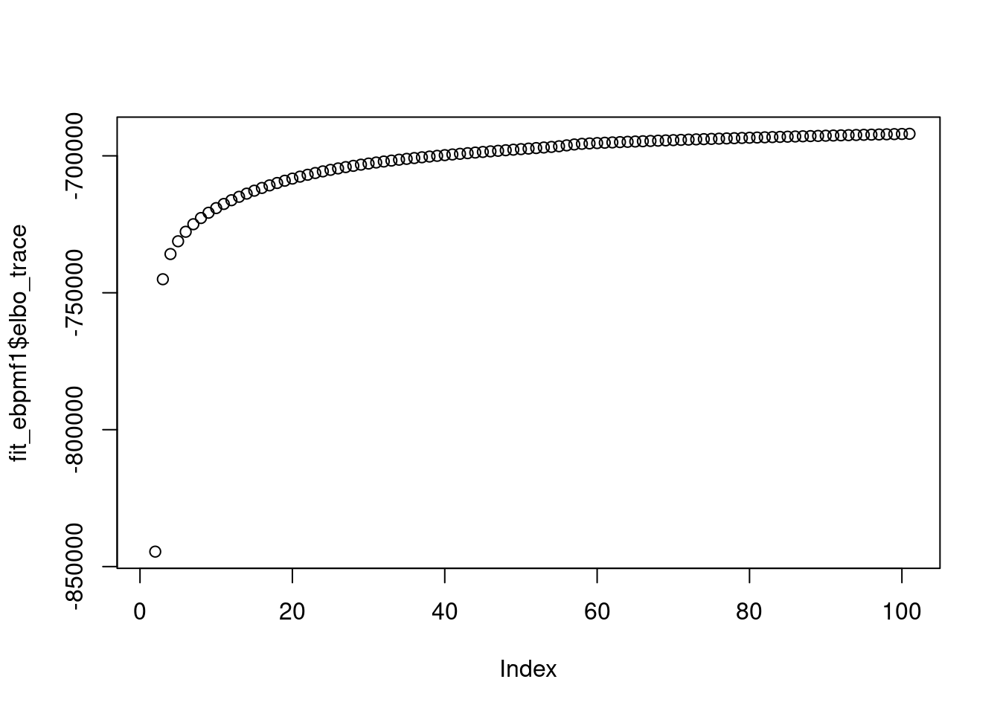
plot(fit_ebpmf1$sigma2_trace[,100])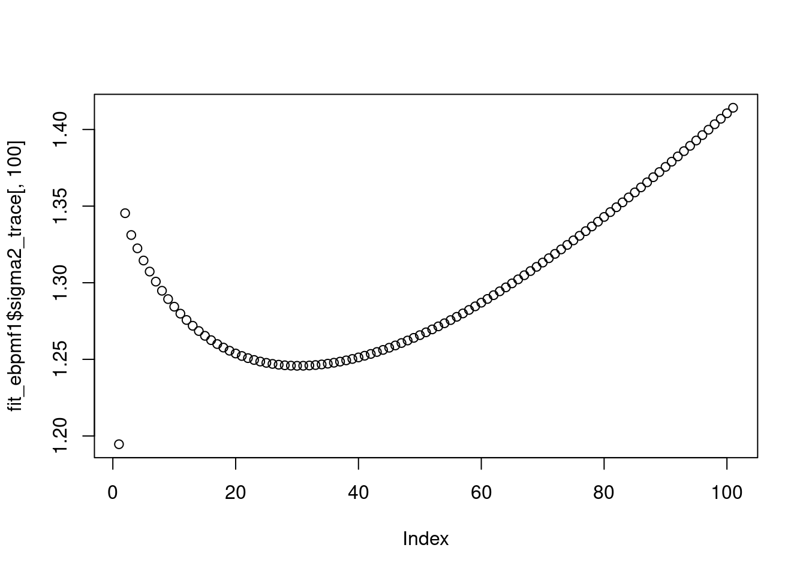
p1=structure_plot_general(fit_ebpmf1$fit_flash$L_pm[,-c(1,2)],fit_flash$F_pm,grouping = datax$samples$journal,std_L_method = 'sum_to_1')Running tsne on 600 x 8 matrix.Running tsne on 469 x 8 matrix.Running tsne on 684 x 8 matrix.Running tsne on 247 x 8 matrix.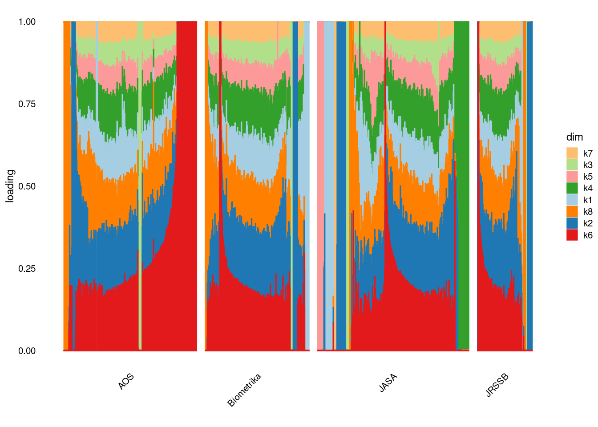
p2=structure_plot_general(fit_ebpmf1$fit_flash$L_pm[,-c(1,2)],fit_flash$F_pm,grouping = datax$samples$journal,std_L_method = 'row_max_1')Running tsne on 600 x 8 matrix.Running tsne on 469 x 8 matrix.Running tsne on 684 x 8 matrix.Running tsne on 247 x 8 matrix.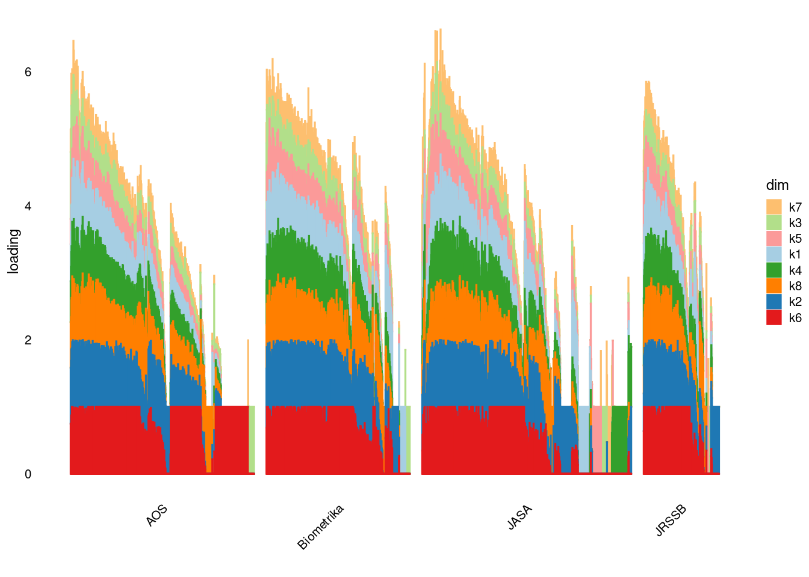
p3=structure_plot_general(fit_ebpmf1$fit_flash$L_pm[,-c(1,2)],fit_flash$F_pm,grouping = datax$samples$journal,std_L_method = 'col_norm_1')Running tsne on 600 x 8 matrix.Running tsne on 469 x 8 matrix.Running tsne on 684 x 8 matrix.Running tsne on 247 x 8 matrix.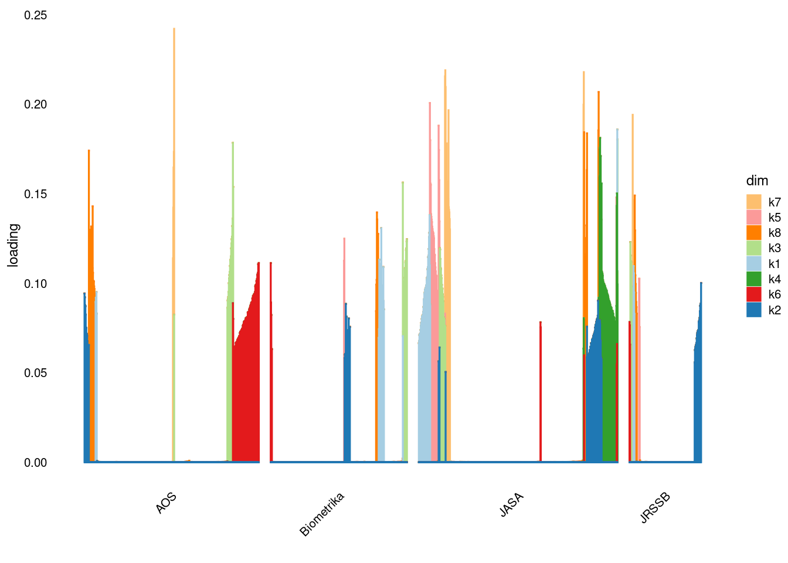
p4=structure_plot_general(fit_ebpmf1$fit_flash$L_pm[,-c(1,2)],fit_flash$F_pm,grouping = datax$samples$journal,std_L_method = 'col_max_1')Running tsne on 600 x 8 matrix.Running tsne on 469 x 8 matrix.Running tsne on 684 x 8 matrix.Running tsne on 247 x 8 matrix.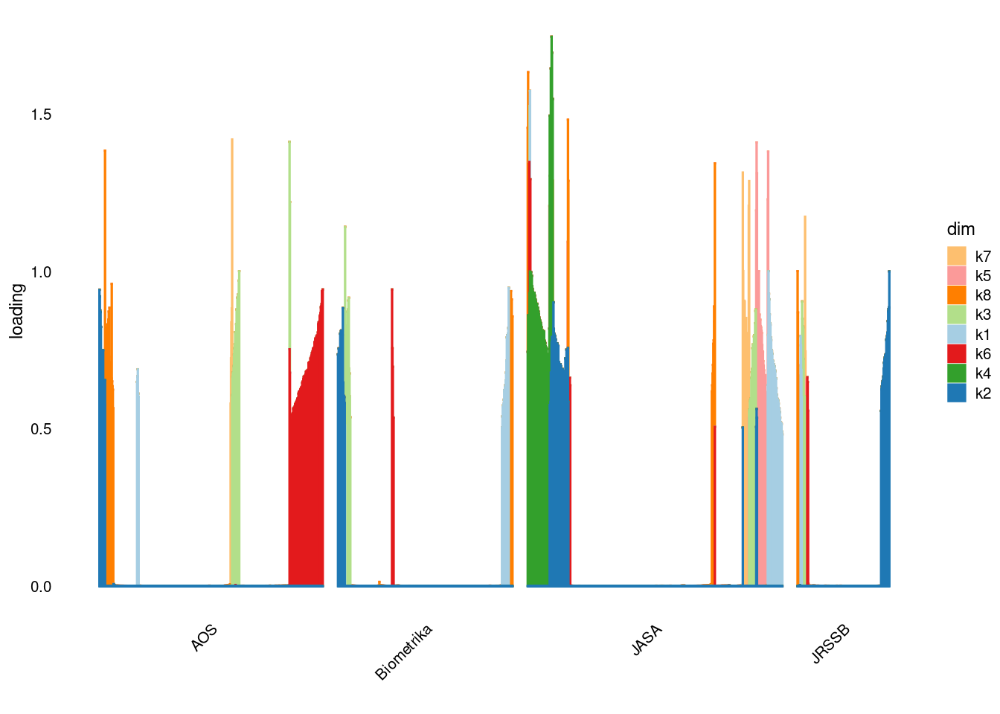
Init 2
# fit_ebpmf2 = ebpmf_log(datax$data,
# flash_control=list(backfit_extrapolate=T,backfit_warmstart=T,
# ebnm.fn = c(ebnm::ebnm_point_exponential, ebnm::ebnm_point_exponential),
# loadings_sign = 1,factors_sign=1,Kmax=10),
# init_control = list(n_cores=5,flash_est_sigma2=T,log_init_for_non0y=F),
# general_control = list(maxiter=500,save_init_val=T,save_latent_M=T),
# sigma2_control = list(return_sigma2_trace=T))
#saveRDS(fit_ebpmf2,file='/project2/mstephens/dongyue/poisson_mf/sla/sla2000_ebnmf_fit_init2.rds')
fit_ebpmf2 = readRDS('/project2/mstephens/dongyue/poisson_mf/sla/sla2000_ebnmf_fit_init2.rds')plot(fit_ebpmf2$elbo_trace)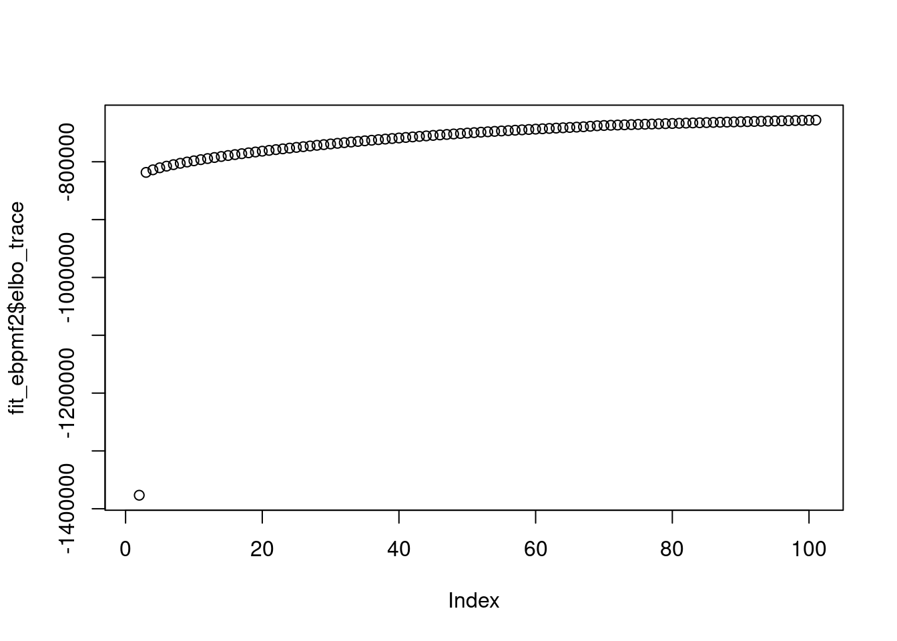
plot(fit_ebpmf2$sigma2_trace[,100])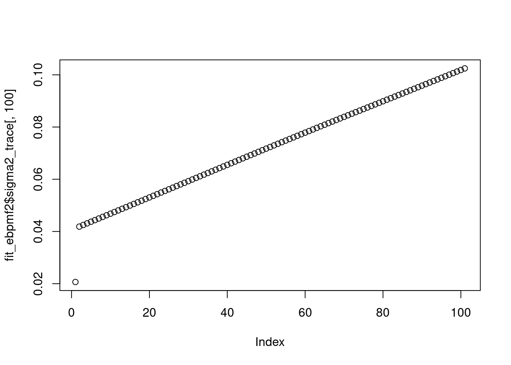
p1=structure_plot_general(fit_ebpmf2$fit_flash$L_pm[,-c(1,2)],fit_flash$F_pm,grouping = datax$samples$journal,std_L_method = 'sum_to_1')Running tsne on 600 x 9 matrix.Running tsne on 469 x 9 matrix.Running tsne on 684 x 9 matrix.Running tsne on 247 x 9 matrix.
p2=structure_plot_general(fit_ebpmf2$fit_flash$L_pm[,-c(1,2)],fit_flash$F_pm,grouping = datax$samples$journal,std_L_method = 'row_max_1')Running tsne on 600 x 9 matrix.Running tsne on 469 x 9 matrix.Running tsne on 684 x 9 matrix.Running tsne on 247 x 9 matrix.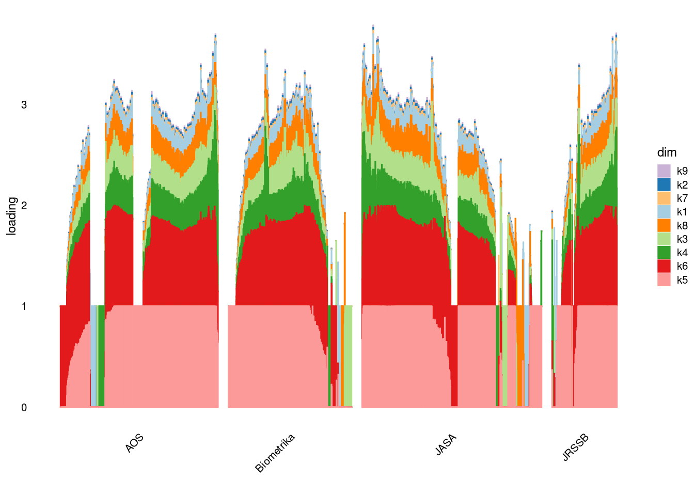
p3=structure_plot_general(fit_ebpmf2$fit_flash$L_pm[,-c(1,2)],fit_flash$F_pm,grouping = datax$samples$journal,std_L_method = 'col_norm_1')Running tsne on 600 x 9 matrix.Running tsne on 469 x 9 matrix.Running tsne on 684 x 9 matrix.Running tsne on 247 x 9 matrix.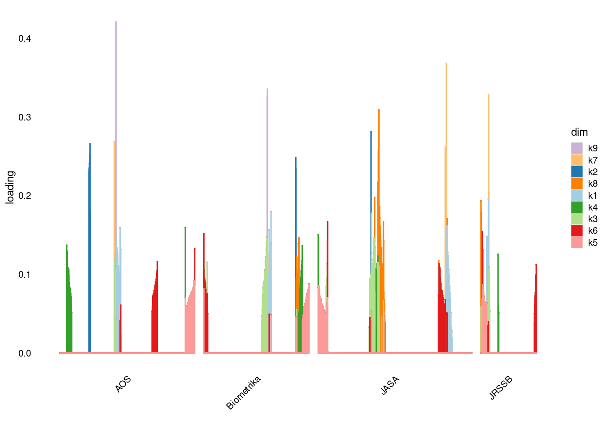
p4=structure_plot_general(fit_ebpmf2$fit_flash$L_pm[,-c(1,2)],fit_flash$F_pm,grouping = datax$samples$journal,std_L_method = 'col_max_1')Running tsne on 600 x 9 matrix.Running tsne on 469 x 9 matrix.Running tsne on 684 x 9 matrix.Running tsne on 247 x 9 matrix.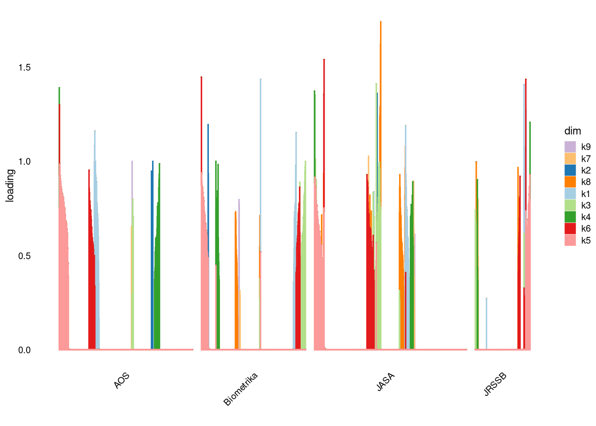
Init 3
# fit_ebpmf3 = ebpmf_log(datax$data,
# flash_control=list(backfit_extrapolate=T,backfit_warmstart=T,
# ebnm.fn = c(ebnm::ebnm_point_exponential, ebnm::ebnm_point_exponential),
# loadings_sign = 1,factors_sign=1,Kmax=10),
# init_control = list(n_cores=5,flash_est_sigma2=T,log_init_for_non0y=T),
# general_control = list(maxiter=500,save_init_val=T,save_latent_M=T),
# sigma2_control = list(return_sigma2_trace=T))
# saveRDS(fit_ebpmf3,file='/project2/mstephens/dongyue/poisson_mf/sla/sla2000_ebnmf_fit_init3.rds')
fit_ebpmf3 = readRDS('/project2/mstephens/dongyue/poisson_mf/sla/sla2000_ebnmf_fit_init3.rds')plot(fit_ebpmf3$elbo_trace)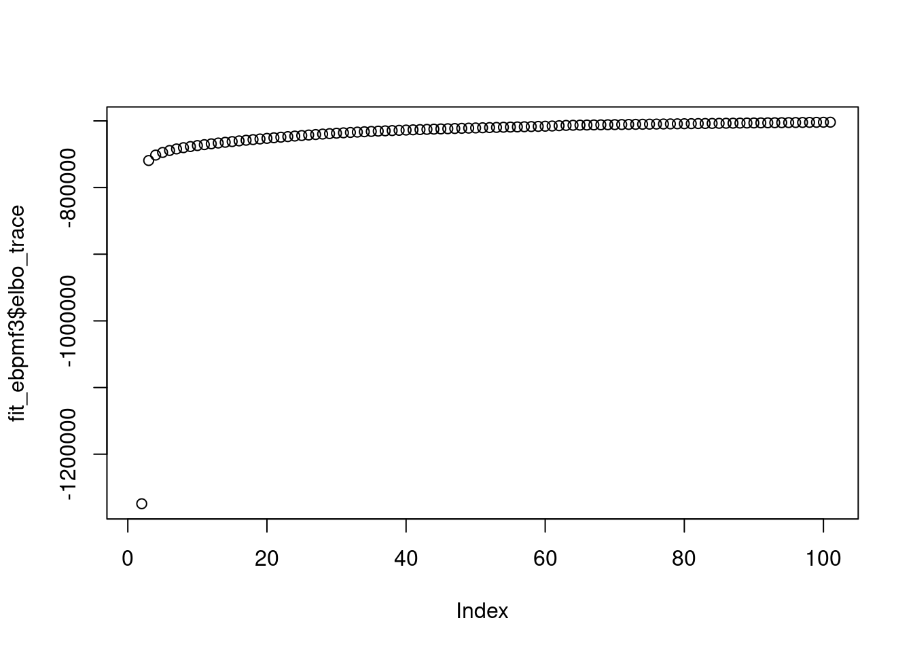
plot(fit_ebpmf3$sigma2_trace[,100])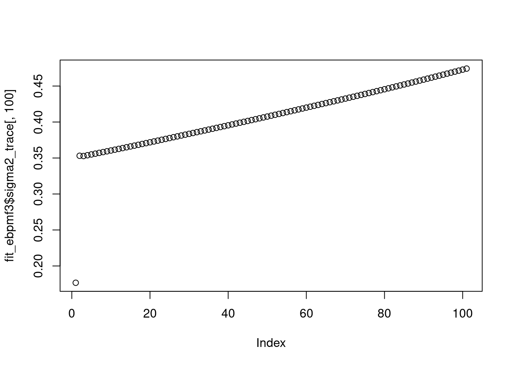
p1=structure_plot_general(fit_ebpmf3$fit_flash$L_pm[,-c(1,2)],fit_flash$F_pm,grouping = datax$samples$journal,std_L_method = 'sum_to_1')Running tsne on 600 x 9 matrix.Running tsne on 469 x 9 matrix.Running tsne on 684 x 9 matrix.Running tsne on 247 x 9 matrix.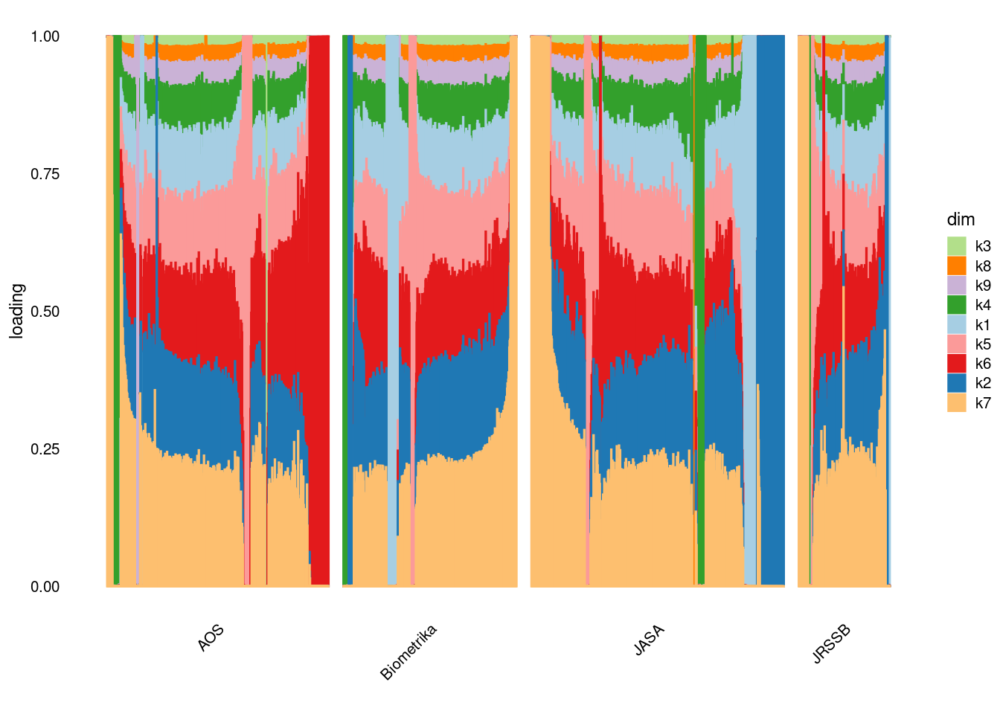
p2=structure_plot_general(fit_ebpmf3$fit_flash$L_pm[,-c(1,2)],fit_flash$F_pm,grouping = datax$samples$journal,std_L_method = 'row_max_1')Running tsne on 600 x 9 matrix.Running tsne on 469 x 9 matrix.Running tsne on 684 x 9 matrix.Running tsne on 247 x 9 matrix.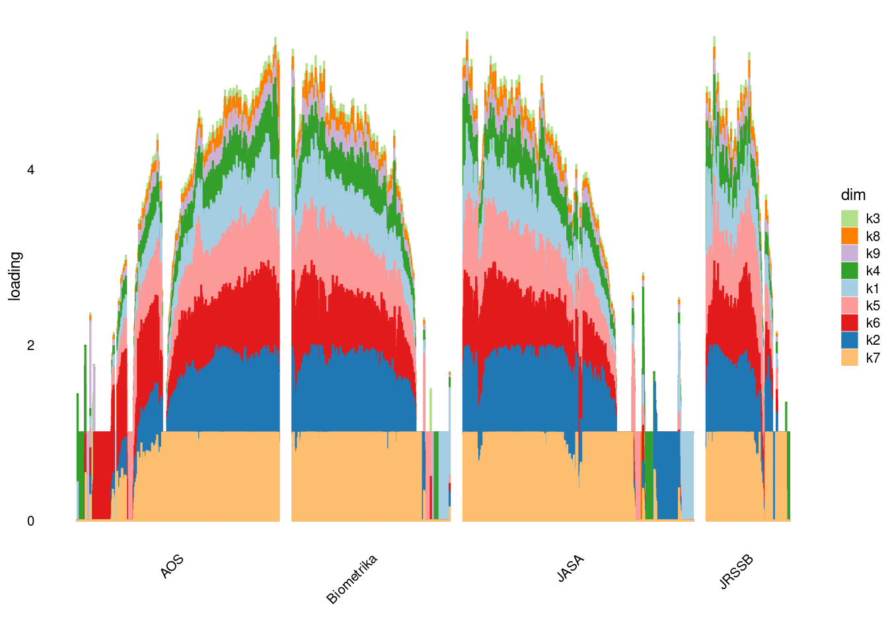
p3=structure_plot_general(fit_ebpmf3$fit_flash$L_pm[,-c(1,2)],fit_flash$F_pm,grouping = datax$samples$journal,std_L_method = 'col_norm_1')Running tsne on 600 x 9 matrix.Running tsne on 469 x 9 matrix.Running tsne on 684 x 9 matrix.Running tsne on 247 x 9 matrix.
p4=structure_plot_general(fit_ebpmf3$fit_flash$L_pm[,-c(1,2)],fit_flash$F_pm,grouping = datax$samples$journal,std_L_method = 'col_max_1')Running tsne on 600 x 9 matrix.Running tsne on 469 x 9 matrix.Running tsne on 684 x 9 matrix.Running tsne on 247 x 9 matrix.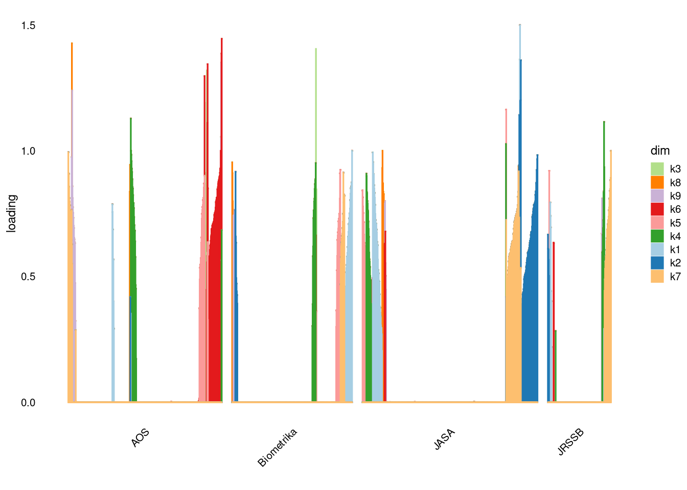
Summary
Try to increase the number of words?
sessionInfo()R version 4.1.0 (2021-05-18)
Platform: x86_64-pc-linux-gnu (64-bit)
Running under: CentOS Linux 7 (Core)
Matrix products: default
BLAS: /software/R-4.1.0-no-openblas-el7-x86_64/lib64/R/lib/libRblas.so
LAPACK: /software/R-4.1.0-no-openblas-el7-x86_64/lib64/R/lib/libRlapack.so
locale:
[1] LC_CTYPE=en_US.UTF-8 LC_NUMERIC=C LC_TIME=C
[4] LC_COLLATE=C LC_MONETARY=C LC_MESSAGES=C
[7] LC_PAPER=C LC_NAME=C LC_ADDRESS=C
[10] LC_TELEPHONE=C LC_MEASUREMENT=C LC_IDENTIFICATION=C
attached base packages:
[1] stats graphics grDevices utils datasets methods base
other attached packages:
[1] gridExtra_2.3 ggplot2_3.4.1 ebpmf_2.3.1 flashier_0.2.51
[5] ebnm_1.0-54 magrittr_2.0.3 fastTopics_0.6-142 Matrix_1.5-3
[9] workflowr_1.6.2
loaded via a namespace (and not attached):
[1] Rtsne_0.16 ebpm_0.0.1.3 colorspace_2.1-0
[4] smashr_1.3-6 ellipsis_0.3.2 mr.ash_0.1-87
[7] rprojroot_2.0.2 fs_1.5.0 rstudioapi_0.13
[10] farver_2.1.1 MatrixModels_0.5-1 ggrepel_0.9.3
[13] fansi_1.0.4 mvtnorm_1.1-2 codetools_0.2-18
[16] splines_4.1.0 cachem_1.0.5 knitr_1.33
[19] jsonlite_1.8.4 nloptr_1.2.2.2 mcmc_0.9-7
[22] ashr_2.2-54 smashrgen_1.2.4 uwot_0.1.14
[25] compiler_4.1.0 httr_1.4.5 RcppZiggurat_0.1.6
[28] fastmap_1.1.0 lazyeval_0.2.2 cli_3.6.1
[31] later_1.3.0 htmltools_0.5.4 quantreg_5.94
[34] prettyunits_1.1.1 tools_4.1.0 coda_0.19-4
[37] gtable_0.3.1 glue_1.6.2 dplyr_1.1.0
[40] Rcpp_1.0.10 softImpute_1.4-1 jquerylib_0.1.4
[43] vctrs_0.6.2 iterators_1.0.13 wavethresh_4.7.2
[46] xfun_0.24 stringr_1.5.0 trust_0.1-8
[49] lifecycle_1.0.3 irlba_2.3.5.1 MASS_7.3-54
[52] scales_1.2.1 hms_1.1.2 promises_1.2.0.1
[55] parallel_4.1.0 SparseM_1.81 yaml_2.3.7
[58] pbapply_1.7-0 sass_0.4.0 stringi_1.6.2
[61] SQUAREM_2021.1 highr_0.9 deconvolveR_1.2-1
[64] foreach_1.5.1 caTools_1.18.2 truncnorm_1.0-8
[67] shape_1.4.6 horseshoe_0.2.0 rlang_1.1.1
[70] pkgconfig_2.0.3 matrixStats_0.59.0 bitops_1.0-7
[73] evaluate_0.14 lattice_0.20-44 invgamma_1.1
[76] purrr_1.0.1 htmlwidgets_1.6.1 labeling_0.4.2
[79] Rfast_2.0.7 cowplot_1.1.1 tidyselect_1.2.0
[82] R6_2.5.1 generics_0.1.3 pillar_1.8.1
[85] whisker_0.4 withr_2.5.0 survival_3.2-11
[88] mixsqp_0.3-48 tibble_3.2.1 crayon_1.5.2
[91] utf8_1.2.3 plotly_4.10.1 rmarkdown_2.9
[94] progress_1.2.2 grid_4.1.0 data.table_1.14.8
[97] git2r_0.28.0 digest_0.6.31 vebpm_0.4.8
[100] tidyr_1.3.0 httpuv_1.6.1 MCMCpack_1.6-3
[103] RcppParallel_5.1.7 munsell_0.5.0 glmnet_4.1-2
[106] viridisLite_0.4.1 bslib_0.4.2 quadprog_1.5-8